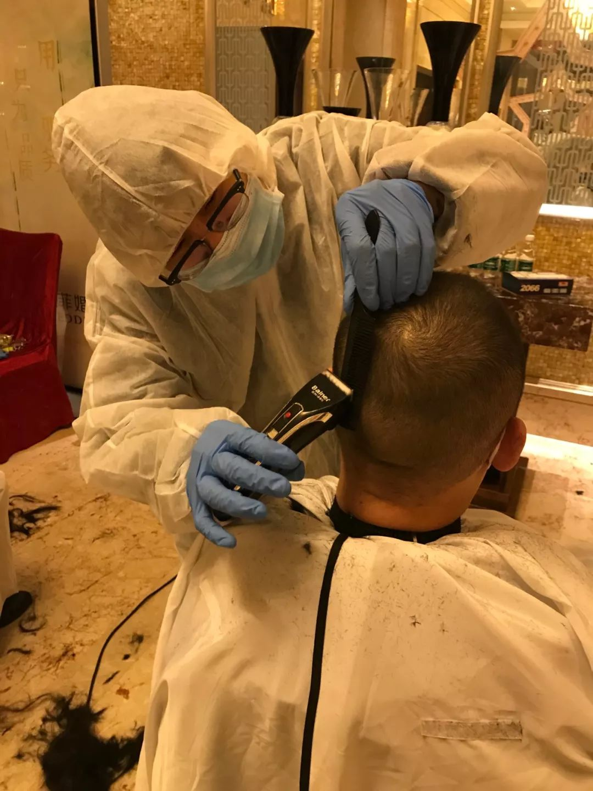
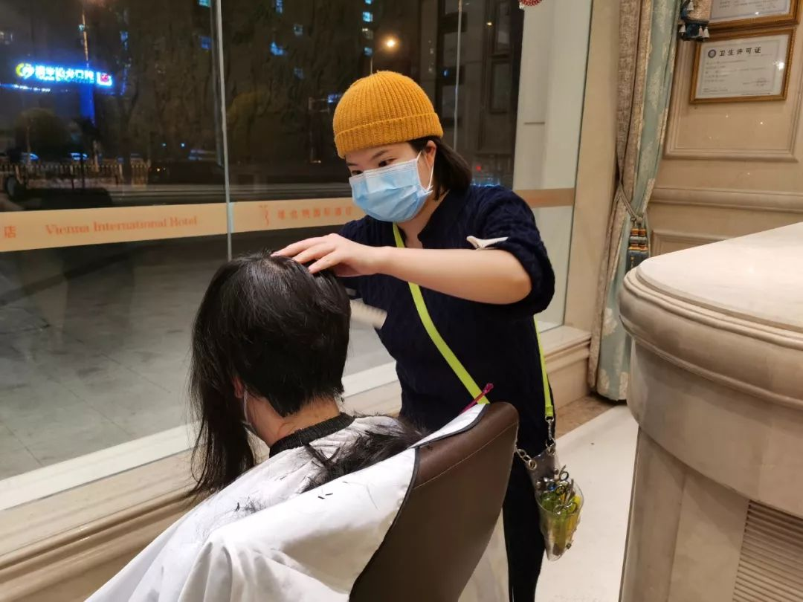

武汉被征用酒店老板：帮助别人就是自救｜疫中人①|界面新闻 · 中国
原文链接 备份链接 关于征用期间的费用问题，刘杰元表示，“他们没有讲，我也没有提。反正闭店也是要损失，不如拿出来给他们（医护人员）住，人家也是来支援我们的嘛，大家都希望疫情早点过去。” 刘杰元（左一）在酒店前台和工作人员交流。图片来源：受 …

哪个女孩不爱美？

图为李冉和文彬两人一起的工作照。 中新社记者 安源 摄
*中新社记**者/夏春平*
今天是情人节，文彬和李冉已约好去纽宾凯尚居酒店为住在这里的医疗队员免费理发。
30岁的小伙子文彬和他24岁的恋人李冉是武汉著名的时尚美发连锁店In Style汉街造型屋理发师。近几天，他们驾车奔波于全国各地支援武汉疫区医疗队入住的维也纳酒店、光谷金盾大酒店等地，为150多名医护人员理发。
来自河南固始县的文彬到武汉打工12年了，自称是“半个武汉人”，如今已是一名资深理发师。他告诉中新社记者：“这些急匆匆从各地赶来武汉的医护人员在疫情防控一线要穿上厚厚的防护服，头发长了确实不便。但我理发十多年了，却从没有碰到年轻女士要求给自己剃光头的。前天晚上我在汉口维也纳酒店大堂为河北医疗队队员理发时，一位长发到腰的姐姐一坐上凳子就告诉我：‘要理光头！’”
“当时我以为自己听错了！”文彬告诉记者。“当我拿起剪刀，捋起她乌黑光滑的长发时，再一次问她，‘确定光头吗？’那位姐姐犹豫片刻后抽泣地说：‘光头！’当时，我禁不住眼圈泛红，被这位姐姐的举动所感染。”

图为文彬在理发。中新社记者 安源 摄
文彬的女友李冉是湖北恩施人，文静漂亮，从事理发工作也有八年了。从刚开始的洗头小工到如今也是一位技艺娴熟的美发师。剪、烫、染、接(发)样样拿得起。这几天李冉和男友一起到酒店给医护人员理发。
李冉说，作为一名女性，她一直都不建议女性理寸头或光头。哪个女孩不爱美，又有哪个爱美的女生不希望自己有一头飘逸长发，女士的头发都是到腰、齐肩、最短的也是齐耳。昨天在武昌光谷金盾大酒店，酒店给一位新疆医疗队女医护人员理光头时，自己握着剪刀的手一直颤抖。当李冉先将这位女医护人员的长发剪到齐耳，准备动推剪在她头上推第一剪时，那位女孩落泪了。
“我没见过这样的场景，挺佩服这位姐姐的勇气。那一刻，我似乎觉得自己一下长大了，对人生有了更深的感悟！”李冉告诉记者。

图为李冉在理发。中新社记者 安源 摄
文彬和女友李冉原计划春节在武汉理发店里值班留守营业，初八等其他员工回来上班后再和女友回家过年至元宵节。哪知1月23日武汉因为切断新冠肺炎病毒外传而“封城”。文彬告诉记者，前几天有朋友在微信朋友圈发信息，呼吁为来武汉支援抗疫治疗的医护人员理发。他和女友一商量就决定参加义务理发活动。这几天文彬和女友及其他同事一起组成一支义务理发小分队，各自驾车，带着简单的理发工具就到医疗队入住酒店。他俩每天从下午六点钟开车到酒店，一直不间歇地工作到深夜12点，一晚每人可以理20—30人。
“我们把酒店大堂当作理发厅，有些酒店大堂没有镜子，我们就对着大堂玻璃门当镜子，战时状态嘛。”文彬说。
文彬告诉记者，医疗队员理发，男士基本都是光头、寸头、短碎发，女士有的从齐腰、齐胸的长发剪到光头、齐耳短发、碎发。
文彬和李冉原本工作的美发店是一家时尚潮流的品牌店，多为年轻人光顾，消费价格也不菲，普通剪发价格在150—280元人民币之间。
“同样是理发，义务做好事和日常营业收费的感觉是不一样的。为千里迢迢来援汉的医护人员免费理发，我们更有成就感。这也是我们为全民抗‘疫’献的一份爱心。我们会坚持直到疫情结束。”文彬说，“现在我们的理发店歇业，暂时没有收入来源，但生活再困难，我们也会扛着，能够扛多久就扛多久。但愿疫情早日结束。”
值班编辑：石若萧
推荐阅读
▼


原文链接 备份链接 关于征用期间的费用问题，刘杰元表示，“他们没有讲，我也没有提。反正闭店也是要损失，不如拿出来给他们（医护人员）住，人家也是来支援我们的嘛，大家都希望疫情早点过去。” 刘杰元（左一）在酒店前台和工作人员交流。图片来源：受 …
原文链接 备份链接 转眼之间，武汉封城，已有九日。绝大多数人都闭门在家时，一些还在为城市运送物资和生活用品的人，在尽其所能保障着城市的基本运转。如果把现在的武汉比喻成一具遭受病毒侵袭的人体，他们就像是人体里细小密集的毛细血管，努力延续着这 …
原文链接 备份链接 ********** *****据支援联盟数据统计，从1月23日开始，武汉地区271家酒店（湖北其他城市约47家）为医护人员提供免费住宿，截止到1月30日晚9点，联盟合计为6056位医护人员提供了超过4万个间夜的住 …
原文链接 备份链接 受到武汉新发布限行令的影响，也出于对车主健康的担忧，善缘车队停止接送医护人员。26日上午，在一些武汉本地的互助群里，提供免费住宿或为医生送餐的武汉市民们还在热议：目前我们还没收到通知，是不是还可以自发去接送医生？ 本 …
原文链接 备份链接 近日，因新型冠状病毒肺炎疫情，湖北武汉封城，全市公共交通停运，医护人员上下班成难事。除民间司机团队自发组织接送外，除夕傍晚，武汉多家当地酒店自发组织，为医护人员就近提供免费住宿。 文 | 刘田 编辑 | 沈小山 近 …